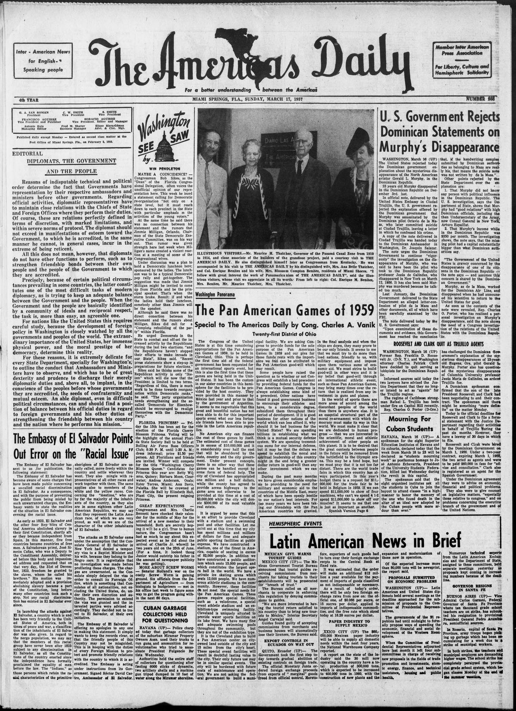

U. S. Government Rejects
https://www.loc.gov/resource/sn82001257/1957-03-17/ed-1/?sp=14

See the original pageVer la página original
Dominican Statements on
Murphy’s Disappearance
WASHINGTON, March 16 (UP) The United States rejected today the Dominican government explanation about the mysterious disappearance of the North American aviator Gerald L. Murphy, in the Dominican Republic.
23 years old Murphy disappeared in the Dominican Republic on December 3rd. last.
In official note, delivered by the United States Embassy in Ciudad Trujillo, the U. S. government rejected the explanation offered by the Dominican government that Murphy was assassinated by the Dominican pilot Octavio de la Maza, who later committed suicide at Ciudad Trujillo, leaving a letter in which he confessed his crime.
A copy of the note delivered in Ciudad Trujillo was handed today to the Dominican Ambassador in Washington, Dr. Joaquín Salazar.
The note urges the Dominican Government to continue “vigorously” the investigation on the disappearance of Murphy, who was said to have been the pilot who took to the Dominican Republic professor Jesús de Galíndez, who disappeared in New York on March 12, 1956. It has also been said Murphy was murdered because he talked too much.
Last January, the Dominican Government delivered to the State Department an alleged letter-confession of pilot de la Maza and other documents, all of which have been carefully examined by the FBI.
The note delivered today by the U. S. Government says:
“Upon examination of these documents and evidence, this Government has reached the conclusion that, if the handwriting samples submitted by Dominican authorities as belonging to Maza are really his, that means the suicide note was not written by de la Maza.”
Other points rejected by the State Department over the explanation are:
1. That Murphy did not know any person with political influence in the Dominican Republic. The U. S. investigation, says the Department of State, shows that Murphy had “good relations” with high Dominican officials, including the then Undersecretary of the Army, now Consul General in New York, Arturo Espaillat.
2. That Murphy’s income while in the Dominican Republic was $350 per month. The investigation shows, the note says, that the missing pilot had a capital substantially bigger than what Dominican authorities say.
“The Government of the United States is gravely concerned by the disappearance of one of its citizens in the Dominican Republic — the note says — and assumes this concern is shared by the Dominican Government.”
Murphy, as de la Maza, worked for the Dominican Air Line, and disappeared when he had announced his intention to return to the United States for good.
As soon as the contents of the note were revealed, Rep. Charles O. Porter, who has realized a personal investigation on Murphy’s disappearance, said the note shows the need of a Congress investigation of the relations of the United States with the Dominican Republic.
How to cite this articleCómo citar este artículo
Diario Las AméRicas. (1957). Miami, Fla.;Miami Springs, Fla., March 17, 195717 de marzo de 1957. DR in the American PressRD en la Prensa Norteamericana. Library of Congress, Chronicling America: https://www.loc.gov/resource/sn82001257/1957-03-17/ed-1/?sp=14
ReferencesReferencias
Library of Congress, Chronicling America: Diario Las AméRicas, March 17, 195717 de marzo de 1957.
Send an observationEnviar una observación
Does this article connect with your family, your town, or something you know? Did we get something wrong? Write to us. Observations go to the editor's inbox and are read by a person.¿Este artículo conecta con su familia, su pueblo o algo que usted conoce? ¿Nos equivocamos en algo? Escríbanos. Las observaciones llegan al buzón del editor y las lee una persona.
Send observationEnviar observación